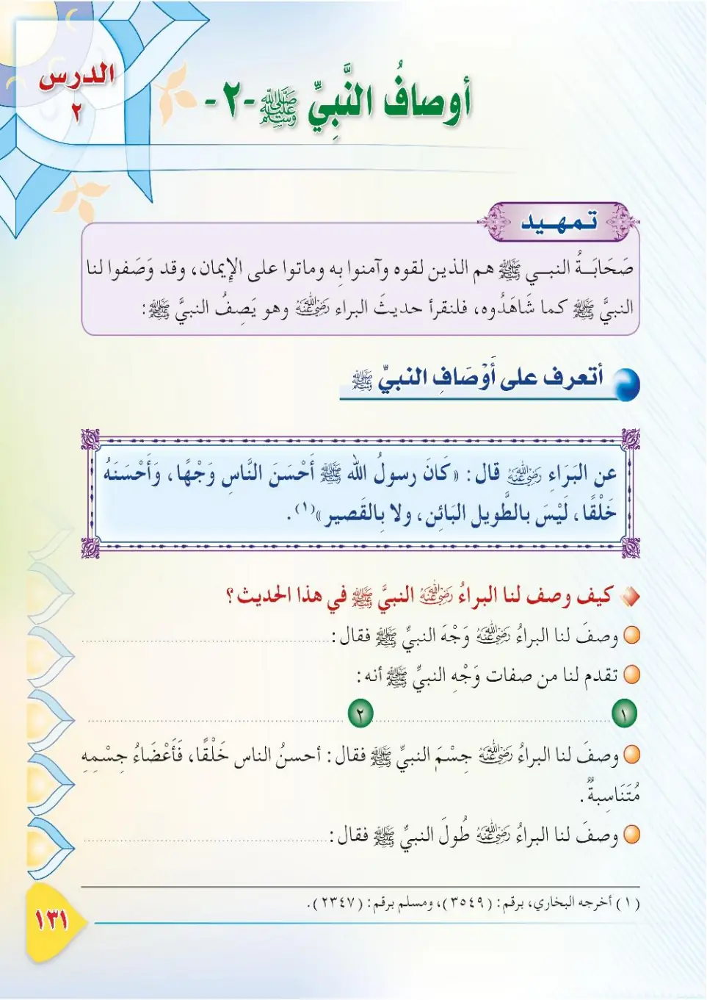
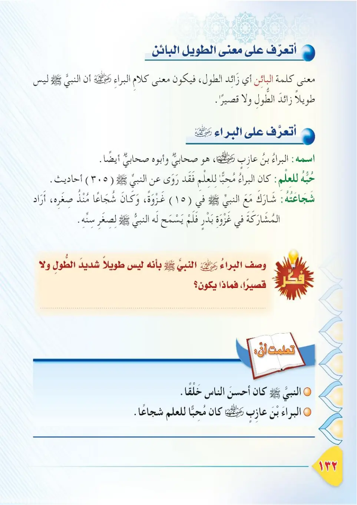
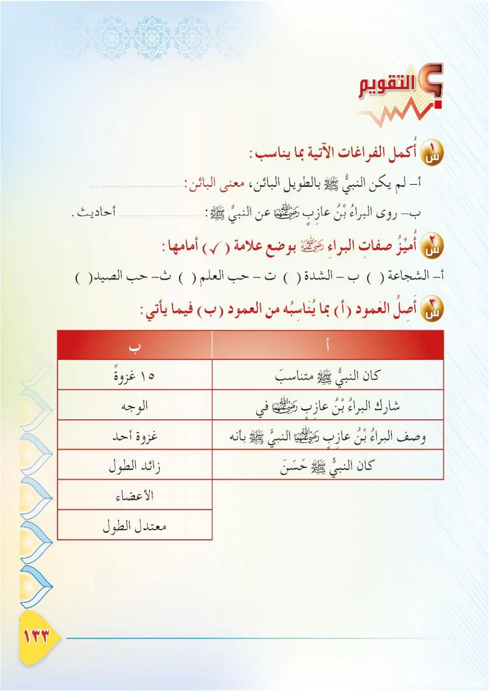
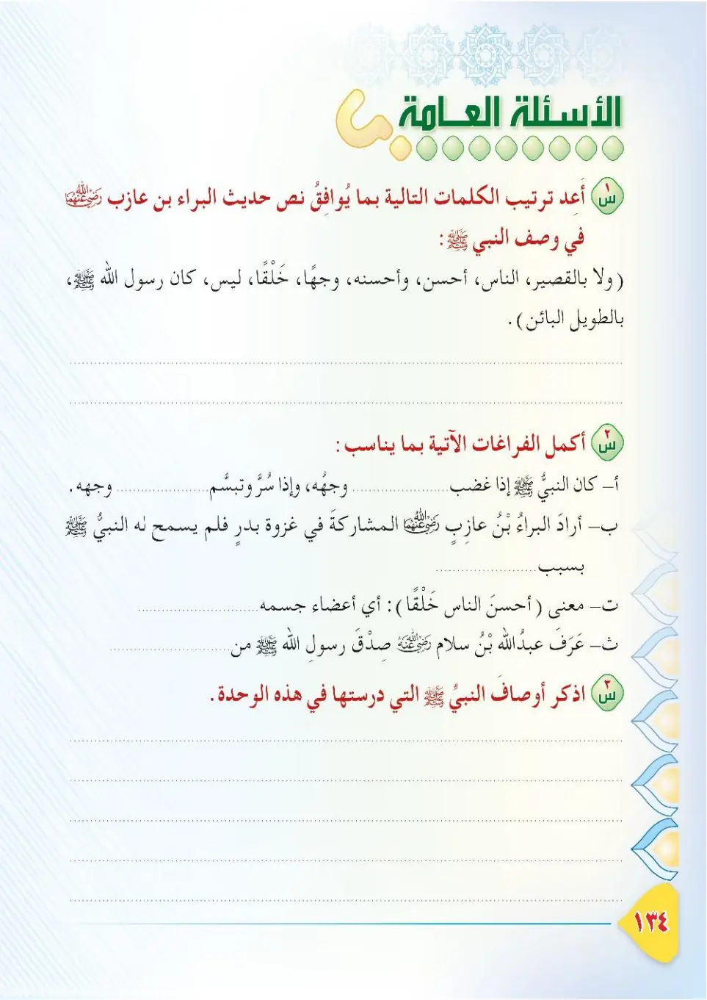
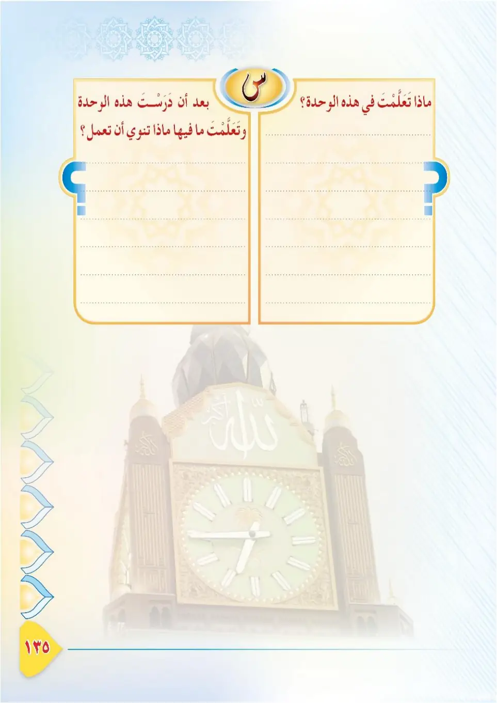
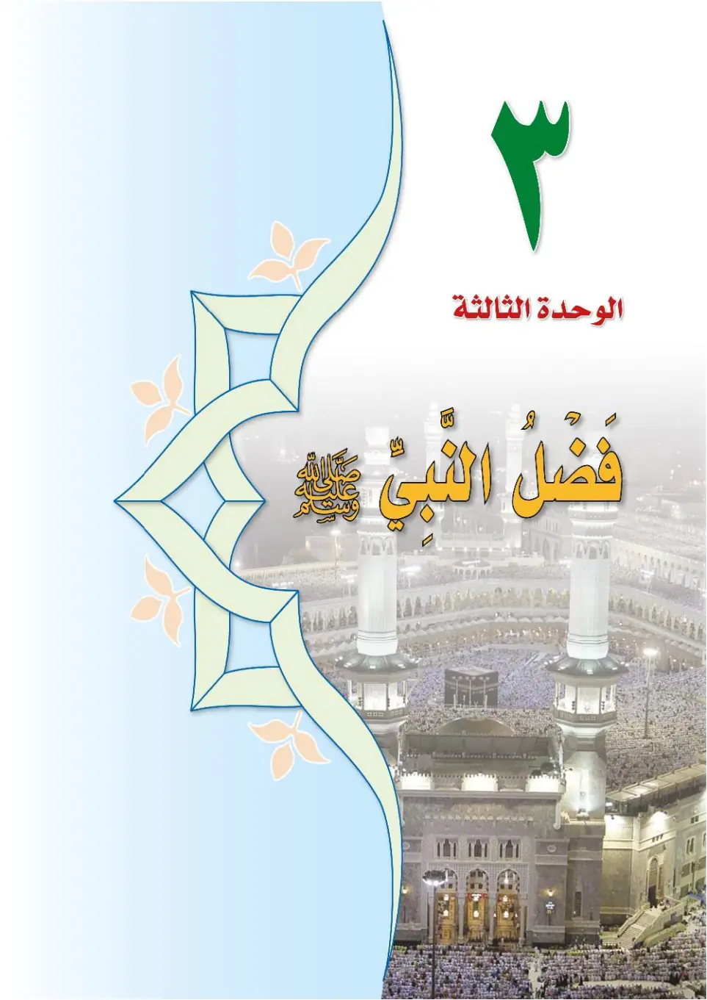
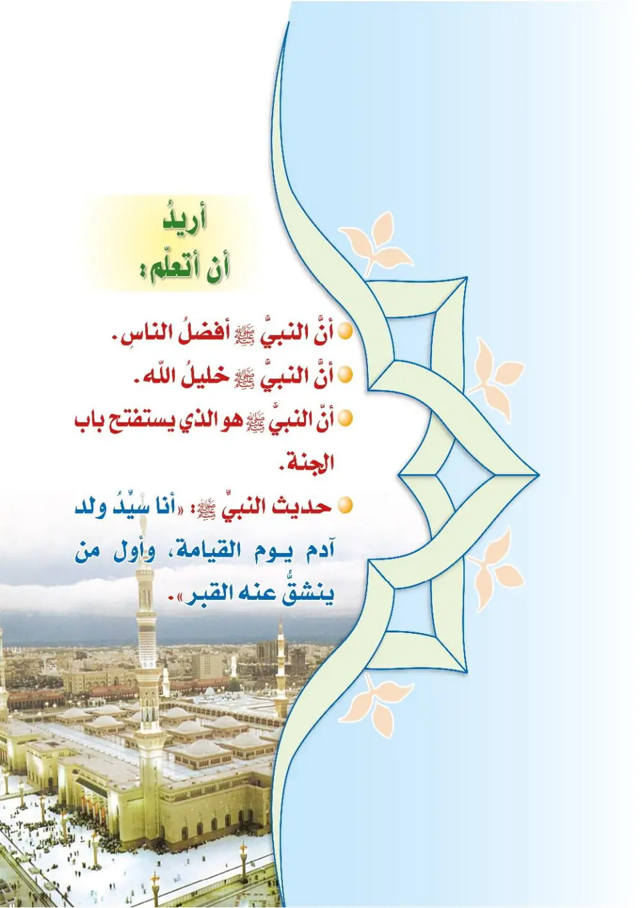

Stage 3·المرحلة الثالثة📖 Unit 2
أَوْصَافُ النَّبِيِّ ﷺ (٢) The Attributes of the Prophet ﷺ (2)
From the Textbookpp. 132–138







صحابةُ النبيِّ ﷺ الذين رأَوه وعاشوا معه ورَضوا اللهَ بدِّينِه وصفوا لنا أوصافَهُ كما شاهدوه. فلنقرأْ حديثَ البراءِ بنِ عازبٍ رضي الله عنه وهو يصفُ النبيَّ ﷺ.
Ashabu an-nabiyyi ﷺ alladhina ra'awhu wa 'ashu ma'ah wasafu lana awsafahu kama shahiduh. Falaqra' haditha al-Bara'i ibn 'Azib radiyallahu 'anhu wa huwa yasifu an-nabiyya ﷺ.
The Companions of the Prophet ﷺ who saw him, lived with him, and were pleased with Allah for his religion, described his attributes to us as they witnessed them. Let us read the hadith of Al-Bara ibn 'Azib, may Allah be pleased with him, as he describes the Prophet ﷺ.
நபி ﷺ அவர்களைக் கண்டு, அவருடன் வாழ்ந்து, மார்க்கத்தில் அல்லாஹ்வை மகிழ்ந்தவர்களான தோழர்கள், அவர்கள் கண்டபடி அவர் பண்புகளை நமக்கு விவரித்துள்ளனர். நபி ﷺ அவர்களை விவரிக்கும் அல்-பரா இப்னு ஆஸிப் (ரலி) அவர்களின் ஹதீஸைப் படிப்போம்.
عن البراءِ بنِ عازبٍ رضي الله عنه قال: كان رسولُ اللهِ ﷺ أحسنَ الناسِ وَجْهًا، وأحسنَهم خَلْقًا، ليس بالطويلِ البائنِ ولا بالقصيرِ. أخرجه البخاري ومسلم.
'An al-Bara'i ibn 'Azib radiyallahu 'anhu qal: kana rasulullahi ﷺ ahsana an-nasi wajhan, wa ahsanahum khalqan, laysa bit-tawili al-ba'ini wa la bil-qasir. Akhrajahu al-Bukhari wa Muslim.
Al-Bara ibn 'Azib, may Allah be pleased with him, said: The Messenger of Allah ﷺ was the most handsome of people in face and the best of them in build; he was neither excessively tall nor short. Narrated by Al-Bukhari and Muslim.
அல்-பரா இப்னு ஆஸிப் (ரலி) கூறினார்கள்: "அல்லாஹ்வின் தூதர் ﷺ மக்களில் முக அழகில் மிகச் சிறந்தவராகவும், உருவ அமைப்பில் மிகச் சிறந்தவராகவும் இருந்தார்கள்; மிக உயரமானவரும் இல்லை, குட்டையானவரும் இல்லை." (புகாரி, முஸ்லிம்)
ماذا وصفَ البراءُ رضي الله عنه في هذا الحديثِ؟ ١- وَجْهَ النبيِّ ﷺ: قال أحسنُ الناسِ وَجْهًا. ٢- خَلْقَ النبيِّ ﷺ: قال أَحسنُهم خَلْقًا؛ أي أنَّ أعضاءَه متناسِبةٌ. ٣- طولَ النبيِّ ﷺ: قال ليسَ بالطويلِ البائنِ ولا بالقصيرِ.
Madha wasafa al-Bara'u radiyallahu 'anhu fi hadha al-hadith? 1. Wajha an-nabiyyi ﷺ: qal ahsanu an-nasi wajhan. 2. Khalqa an-nabiyyi ﷺ: qal ahsanuhum khalqan; ayy anna a'da'ahu mutanasibah. 3. Tula an-nabiyyi ﷺ: qal laysa bit-tawili al-ba'ini wa la bil-qasir.
What did Al-Bara describe in this hadith?<br>1. The Prophet's face: he said he was the most handsome of people in face.<br>2. The Prophet's build: he said he was the best of them in build — meaning his limbs were proportionate.<br>3. The Prophet's height: he said he was neither excessively tall nor short.
இந்த ஹதீஸில் அல்-பரா எதை விவரித்தார்?<br>1. முகம்: மக்களில் முகத்தில் மிகச் சிறந்தவர்.<br>2. உருவ அமைப்பு: உறுப்புகள் சீரானவை.<br>3. உயரம்: மிக உயரமும் அல்ல, குட்டையும் அல்ல.
ما معنى قولِه: «ليسَ بالطويلِ البائنِ»؟ البائنُ: هو الزائدُ في طولِه على ما يليقُ به. فيكونُ المعنى: أنَّ النبيَّ ﷺ ليس طويلًا زائدًا في الطولِ على حدِّ الاعتدالِ، وليس بقصيرٍ.
Ma ma'na qawlih: «laysa bit-tawili al-ba'ini»? Al-ba'inu: huwa az-za'idu fi tulih 'ala ma yaliq bih. Fayakunu al-ma'na: anna an-nabiyya ﷺ laysa tawilan za'idan fit-tuli 'ala haddi al-i'tidal, wa laysa bi-qasir.
What is the meaning of his saying: "neither excessively tall"?<br>Al-Ba'in means: one whose height exceeds what is fitting. So the meaning is: the Prophet ﷺ was not excessively tall beyond moderation, nor was he short.
'மிக உயரமானவர் அல்ல' என்பதன் பொருள் என்ன?<br>'அல்-பாயின்' என்றால்: தகுந்த அளவைத் தாண்டிய உயரம். பொருள்: நபி ﷺ நடுத்தரத்தைத் தாண்டிய உயரத்துடனும் இல்லை, குட்டையாகவும் இல்லை.
أَعْرِفُ البراءَ بنَ عازبٍ رضي الله عنه: ١- هو صحابيٌّ جليلٌ، ووالدُه عازبٌ صحابيٌّ أيضًا. ٢- كان محبًّا للعلمِ، فروى عن النبيِّ ﷺ ثلاثمائةٍ وخمسةَ أحاديثَ. ٣- كان شجاعًا منذ صغرِه، وشاركَ في خمسَ عشرةَ غزوةً مع النبيِّ ﷺ. ٤- لم يسمحْ له النبيُّ ﷺ بالاشتراكِ في غزوةِ بدرٍ؛ لصغَرِ سنِّه.
A'rifu al-Bara'a ibn 'Azib radiyallahu 'anhu: 1. huwa sahabiyyun jalil, wa waliduhu 'Azibun sahabiyyun aydan. 2. kana muhibban lil-'ilm, farawa 'ani an-nabiyyi ﷺ thalathami'atin wa khamsata ahadith. 3. kana shuja'an mundhu sigharih, wa sharaka fi khamsa 'ashrata ghazwatan ma'a an-nabiyyi ﷺ. 4. lam yasmah lahu an-nabiyyu ﷺ bil-ishtiraki fi ghazwati Badrin; lisighari sinnih.
I get to know Al-Bara ibn 'Azib, may Allah be pleased with him:<br>1. He was an honourable Companion, and his father 'Azib was also a Companion.<br>2. He loved knowledge; he narrated three hundred and five hadiths from the Prophet ﷺ.<br>3. He was courageous from a young age and took part in fifteen expeditions with the Prophet ﷺ.<br>4. The Prophet ﷺ did not allow him to join the Battle of Badr because he was too young.
அல்-பரா இப்னு ஆஸிப் (ரலி) அவர்களை அறிந்து கொள்வோம்:<br>1. தலைசிறந்த தோழர்; தந்தை ஆஸிபும் தோழர்.<br>2. கல்வியை நேசித்தவர்; நபி ﷺ அவர்களிடமிருந்து 305 ஹதீஸ்களை அறிவித்தார்.<br>3. இளமையிலிருந்தே வீரர்; நபியுடன் 15 போர்களில் கலந்து கொண்டார்.<br>4. இளம் வயதால் பத்ர் போரில் கலந்து கொள்ள நபி ﷺ அனுமதிக்கவில்லை.